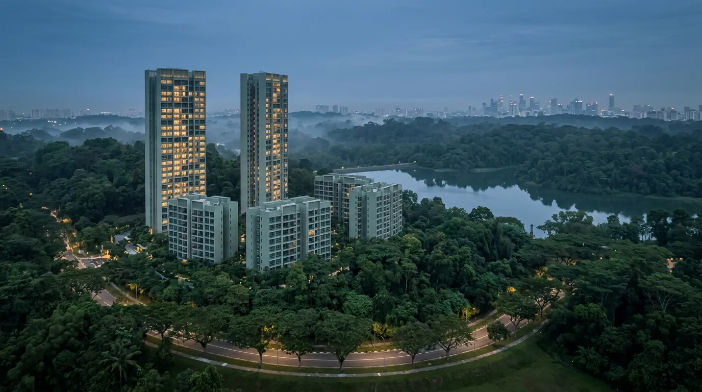

Thomson Reserve (Former Thomson View): Financing Guide Before the 2026 Preview

Thomson Reserve is the redevelopment of the former Thomson View, by a consortium of UOL Group, Singapore Land Group and CapitaLand Development. About 1,268 units on a 540,314 sqft elevated site at Bright Hill Drive in District 20, on a 99-year lease, two minutes' walk from Upper Thomson MRT. Preview is targeted for September or October 2026. Pricing, unit mix and TOP are not released yet, so nobody can quote you a real price today. What you can do now is fix your own number: sort your 75% LTV and TDSR headroom, plan the stamp duty, and if you are upgrading from an HDB flat, work out the ABSD and sale timing early. That is the work that decides whether you can act on preview day.
Want your number before the price list drops? Run a quick affordability check or WhatsApp Dan.
- What is confirmed, and what is not
- Thomson Reserve price: what is known so far
- The location: MRT, schools, nature
- Why the pre-launch window matters
- Sizing your budget before pricing lands
- TDSR and the MAS 4% stress test
- HDB upgraders: ABSD and sale timing
- Progressive payments through construction
- The rate decision: floating now, fixed at TOP
- Four moves before preview day
- Common questions
What Is Confirmed, and What Is Not
Thomson Reserve is the new name for the former Thomson View site, one of the larger collective sales of recent years. The buyer was a consortium of three well-known Singapore developers: UOL Group, Singapore Land Group (SingLand) and CapitaLand Development. Here is what has been put out so far.
| Detail | Confirmed position |
|---|---|
| Developer | UOL Group, SingLand, CapitaLand Development |
| Address | 1, 3, 5, 7, 9, 11 Bright Hill Drive |
| District | D20 (Ang Mo Kio / Bishan / Thomson) |
| Total units | Approx. 1,268 |
| Tenure | 99-year leasehold |
| Site area | 540,314 sqft |
| Configuration | 4 towers at 21 storeys (Classic Collection), 2 towers at 30 storeys (Luxury Collection) |
| Car park | 1,014 lots (about 80% provision) |
| Target preview | September / October 2026 |
| Pricing, unit mix, TOP | Not released |
Source: developer and appointed-marketing materials for the project, compiled 21 July 2026. Details remain subject to change until the developer publishes final figures.
Thomson Reserve Price: What Is Known So Far
That puts this Upper Thomson new launch in an unusual spot for buyers. You cannot compare it on price yet, but you can do the one piece of work that price will not change: establishing how much you can actually borrow and what that costs you monthly. When the list lands, you then shop inside a number you already trust. The rest of this guide is how to arrive at that number.
The Location: MRT, Schools, Nature
Upper Thomson is a mature estate, and the site itself is elevated with a large frontage, which is unusual for a plot this size. Three things drive demand here.
Transport
Upper Thomson MRT (TE8) on the Thomson-East Coast Line is about a two-minute walk. Caldecott is one stop away and connects to the Circle Line, Bright Hill is one stop, Stevens is two, and Orchard is five. The CBD is within nine stops, and the line runs through to Marina Bay and on to the east. Longer term, the North-South Corridor is being built as a 21.5km walk-cycle-ride route from Woodlands to the ECP, with express bus lanes and a cycling path, which should ease the drive south.
Schools
Ai Tong School sits within 1km, about a four-minute walk, which matters for P1 registration priority. Catholic High School, CHIJ St Nicholas Girls' School, Marymount Convent and Ang Mo Kio Primary are within roughly 1 to 2km, and Raffles Institution and Eunoia Junior College are nearby. For a lot of buyers in this pocket, the 1km ballot is the reason they are looking at all.
Nature and daily needs
MacRitchie Reservoir and the Central Catchment Nature Reserve are on the doorstep, with Windsor Nature Park a short cycle and the TreeTop Walk beyond that. Thomson Plaza is about a three-minute walk for groceries and food, and Junction 8 is three MRT stops. Mount Alvernia Hospital is close by.
None of this sets your loan size. A bank values the unit off transacted comparables and the unit's own attributes. It does explain why a project like this tends to hold demand, which matters for resale liquidity later.
Why the Pre-Launch Window Matters
Most buyers do this backwards. They wait for the price list, fall for a stack, then scramble to work out whether the bank will lend them enough. At a 1,268-unit launch that scramble is expensive, because the well-priced stacks in the popular sizes go first.
The gap between now and a September or October preview is the useful part. Nothing is stopping you from establishing your borrowing ceiling today. When the list appears you are then choosing between units you can actually finance, rather than working out affordability under time pressure with a cheque book open.
Sizing Your Budget Before Pricing Lands
This is private property, so it is a bank loan. No HDB concessionary rate and no MSR cap, just MAS Notice 645 TDSR at 55% of gross monthly income. You can borrow up to 75% on a first property, over a tenure that stops at 30 years or age 65, whichever comes first.
Since there is no price list yet, work the other way round. Start from a purchase price you are comfortable with and see what it demands of you. The figures below are a planning tool, not a quote for any Thomson Reserve unit.
| Purchase price | 5% cash at OTP | 25% down total | Loan @ 75% | Buyer's Stamp Duty |
|---|---|---|---|---|
| S$1.5M | S$75,000 | S$375,000 | S$1.125M | ~S$44,600 |
| S$2.0M | S$100,000 | S$500,000 | S$1.50M | ~S$69,600 |
| S$2.5M | S$125,000 | S$625,000 | S$1.875M | ~S$94,600 |
| S$3.0M | S$150,000 | S$750,000 | S$2.25M | ~S$119,600 |
Illustrative planning examples, not Thomson Reserve prices. No price list has been released.
Two notes on that table. The 5% at OTP is cash, and the remaining 20% can be cash or CPF at Sale and Purchase signing. Buyer's Stamp Duty is due within 14 days of the OTP and is tiered, so it climbs faster than the price does: doubling the price from S$1.5M to S$3.0M nearly triples the BSD (IRAS BSD). Our stamp duty guide breaks the tiers down.
TDSR and the MAS 4% Stress Test
MAS makes every bank test your loan at a 4% medium-term rate, whatever rate you actually take. Your limit is worked out at that 4%, not at the SORA-pegged rate you will really start on, and the 55% TDSR cap applies to that stressed figure.
| Purchase price | Loan @ 75% | Stress instalment (4%, 30y) | Gross income needed |
|---|---|---|---|
| S$1.5M | S$1.125M | ~S$5,370/mo | ~S$9,800/mo |
| S$2.0M | S$1.50M | ~S$7,160/mo | ~S$13,000/mo |
| S$2.5M | S$1.875M | ~S$8,950/mo | ~S$16,300/mo |
| S$3.0M | S$2.25M | ~S$10,740/mo | ~S$19,500/mo |
Illustrative planning examples, not Thomson Reserve prices. No price list has been released.
That 30-year column assumes you are 35 or younger, since the longest tenure that still allows 75% LTV needs the loan to finish by age 65. In your 40s you either shorten the tenure, which lifts the instalment, or take 55% LTV and put 45% down.
Those income floors also assume no other debt. A car loan, credit card minimums and personal loan instalments come off your 55% headroom first, and bonus or self-employed income gets a haircut (see the self-employed TDSR guide). For joint applicants and the income-weighted-average-age rule, the TDSR breakdown has the mechanics.
HDB Upgraders: ABSD and Sale Timing
A large share of interest in this pocket comes from HDB owners in Bishan, Ang Mo Kio and Thomson who want to stay in the area. If that is you, the financing question is less about the loan and more about ABSD and timing, and it is worth thinking through well before preview day.
Once your flat has cleared its Minimum Occupation Period you can buy private property and keep the flat. The catch is that buying a second residential property as a Singapore Citizen attracts 20% ABSD, and that is payable in cash upfront. On a S$2M purchase that is S$400,000 on top of your downpayment and BSD.
There are two broad routes:
- Sell the flat first, then buy. You purchase as a first property, so no ABSD at all. The trade-off is timing and where you live in between, which is what a bridging loan is designed to cover.
- Or buy first and claim the refund later. A married couple with at least one Singapore Citizen can apply to have the ABSD refunded if they sell their first residential property within six months. Because Thomson Reserve is uncompleted, that six-month clock runs from the issue date of the TOP or CSC, whichever is earlier, which in practice means TOP since it always comes first, rather than from your purchase date. That is a longer runway than most people expect, but three conditions bite: you fund the 20% in cash upfront and wait to get it back, IRAS does not grant extensions to that six-month deadline, and the couple must stay married with no change of ownership in the new property. The refund application itself must be filed within six months of selling the first property.
Which one is better depends on your cash position, your flat's value and how comfortable you are carrying two properties. Check your eligibility against the IRAS ABSD rules rather than assuming, because the remission conditions are strict on both the marriage and the six-month window. We walk through the full comparison in the HDB to condo upgrade guide, and the ABSD on a second property piece covers the legitimate routes. If you already own private property, decoupling is a separate conversation with its own costs.
One more thing for upgraders: if you plan to use CPF from the flat sale, remember the accrued interest refund comes off your proceeds. Model the actual cash you walk away with, not the sale price.
Progressive Payments Through Construction
As a Building-Under-Construction purchase, Thomson Reserve will use the Normal Payment Scheme. The bank disburses your loan in stages as the developer hits construction milestones rather than in one lump sum. The schedule is fixed by statute and applies to every buyer the same way:
| Stage | % of Purchase Price | Typical Timing |
|---|---|---|
| OTP booking fee | 5% | Day 0 (cash) |
| S&P exercise | 15% | Within 8 weeks (cash/CPF) |
| Foundation | 10% | ~Month 6 |
| Reinforced concrete framework | 10% | ~Month 12 |
| Brick walls | 5% | ~Month 18 |
| Ceiling | 5% | ~Month 24 |
| Doors, windows, plastering | 5% | ~Month 30 |
| Car park, road, drains | 5% | ~Month 36 |
| TOP (Temporary Occupation Permit) | 25% | ~Month 42 |
| CSC (Certificate of Statutory Completion) | 15% | ~Month 54 |
Your instalment climbs in steps as the loan draws down. Early on it is small, because the bank only charges interest on the portion released. By TOP you are paying on the full loan. So size your budget on the TOP-stage instalment from the start. That full-loan figure is what you carry for the next 25 to 30 years, and for an HDB upgrader who is still servicing a flat, the overlap period is the one to stress-test. The Singapore Mortgage Free Report includes the full schedule with a cashflow worksheet.
The Rate Decision: Floating Now, Fixed at TOP
One point catches most buyers out: a new-launch loan is floating-rate. The bank prices the progressive-disbursement loan off SORA, usually 1-month or 3-month Compounded SORA plus a spread. Fixed-rate packages are sold on completed properties, so they are not available while the project is being built. During construction your only real choice is which floating package, which makes the spread, the lock-in and the free-conversion terms the things to compare (here is the live rate comparison).
With a multi-year construction period, there are two stages to think about. While the loan is part-drawn, a move in SORA applies to only a fraction of it, so the dollar impact is small. At completion the whole loan is drawn, the full menu including fixed opens up, and that is the rate that matters for the long run. The sensible approach is a floating package with good conversion terms now, then reprice or refinance at TOP. The new-launch financing guide covers the BUC mechanics in full.
Four Moves Before Preview Day
- Fix your ceiling. Run your affordability check at the 4% stress floor and settle on a number you can defend, so you shop within it instead of stretching on the day.
- Get an In-Principle Approval. It takes roughly two weeks through several banks at once, and it is what protects your option fee if a bank later declines. Do it before September, not during preview week. Start your IPA here.
- If you own an HDB flat, decide your ABSD route now. Sell-first and buy-first have very different cash requirements, and you want that settled before you are holding an OTP.
- Plan for the TOP-stage instalment, not the booking one, and check it still holds if rates move against you.
Frequently Asked Questions
No price has been released. As of 21 July 2026 the developer has not published a price list, unit sizes or a psf range for Thomson Reserve, and the preview is targeted for September or October 2026. Any figure quoted online today is an estimate rather than a developer number. Until the list is out, the useful step is to work out your own ceiling: on a 75% loan over 30 years, a S$2M purchase needs roughly S$13,000 a month in gross income to clear TDSR, and a S$2.5M purchase about S$16,300.
The preview is targeted for September or October 2026. As of 21 July 2026 the developer has not released pricing, the unit mix or a TOP date, so any specific price figure circulating online is speculation. The practical move while you wait is to fix your own budget: get an In-Principle Approval so you know your borrowing limit before the price list appears.
Thomson Reserve is being developed by a consortium of UOL Group, Singapore Land Group (SingLand) and CapitaLand Development. It is the redevelopment of the former Thomson View condominium, which was sold through a collective sale. The site sits at 1, 3, 5, 7, 9 and 11 Bright Hill Drive in District 20.
About 1,268 residential units on a 540,314 sqft elevated site, on a 99-year lease. The plan is six towers: four 21-storey blocks forming the Classic Collection and two 30-storey blocks forming the Luxury Collection, with 1,014 car park lots, an 80% provision.
You can buy private property once your flat has cleared its Minimum Occupation Period, and you may keep the flat. Buying a second residential property as a Singapore Citizen attracts 20% ABSD, payable in cash upfront, which on a S$2M purchase is S$400,000. A married couple with at least one Singapore Citizen can apply for a refund if they sell their first residential property within six months. Because Thomson Reserve is uncompleted, that six-month window runs from the issue date of the TOP or CSC, whichever is earlier, which in practice means TOP since it always comes first, rather than from the purchase date, which gives a longer runway. IRAS does not extend that deadline, and the refund application must be filed within six months of the sale, so confirm your eligibility against the IRAS rules before you commit.
It depends on the price you buy at, and MAS makes banks test you at a 4% medium-term rate rather than the rate you actually pay. As a rough guide on a 75% loan over 30 years: a S$2M purchase needs roughly S$13,000 a month in gross income to clear the 55% TDSR cap, and a S$2.5M purchase needs about S$16,300. Those figures assume no other debt, since car loans and credit card minimums come off the same 55% headroom.
Not during construction. New-launch loans are floating-rate, priced off Compounded SORA plus a spread, because fixed packages are sold on completed properties. While the project is being built you are choosing between floating packages, where the spread, lock-in and free-conversion terms matter most. Fixed becomes available at TOP, when you can reprice or refinance.
Know Your Number Before Thomson Reserve Previews
Nexus Mortgage SG compares 16+ MAS-regulated banks at no cost: IPA in about two weeks, your TDSR ceiling at the 4% floor, the ABSD and sale-timing plan if you are upgrading from an HDB flat, and the BUC cashflow modelled to TOP.
Work Out My Thomson Reserve Budget →Prefer to talk it through? WhatsApp Dan Ler at +65 8752 0859 for a free review. Banks pay our fee, so you pay nothing.
Or download the full guide: Singapore Mortgage Free Report, with the BUC timeline, 16-bank rate comparison, TDSR stress test, upfront costs and the refinance-at-TOP plan in one PDF.

About the author: Dan Ler has advised on Singapore home loans since 2017 at Nexus Mortgage SG, an independent brokerage comparing 16+ MAS-regulated lenders. Nexus has facilitated 500+ home loans across HDB, EC, private condo and landed property segments. Banks pay Nexus on disbursement, so there is no cost to the borrower.
Nexus Mortgage SG is an independent Singapore mortgage advisory. This article is general information, not financial advice, and is not a sale offer for Thomson Reserve. Nexus is not the appointed sales or marketing agent for the project. Project details are drawn from developer and marketing materials current at 21 July 2026 and remain subject to change; pricing, unit mix and TOP had not been released at the time of writing. The purchase-price figures used in the tables are illustrative planning examples, not quoted prices. Loan, TDSR, BSD, ABSD and CPF figures reflect MAS, IRAS and CPF positions as of publication; rules and bank rates can change. Sources: MAS Notice 645 (TDSR), IRAS BSD, IRAS ABSD, CPF Home Ownership, URA Master Plan.